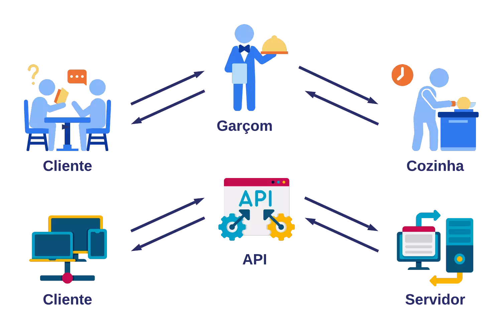
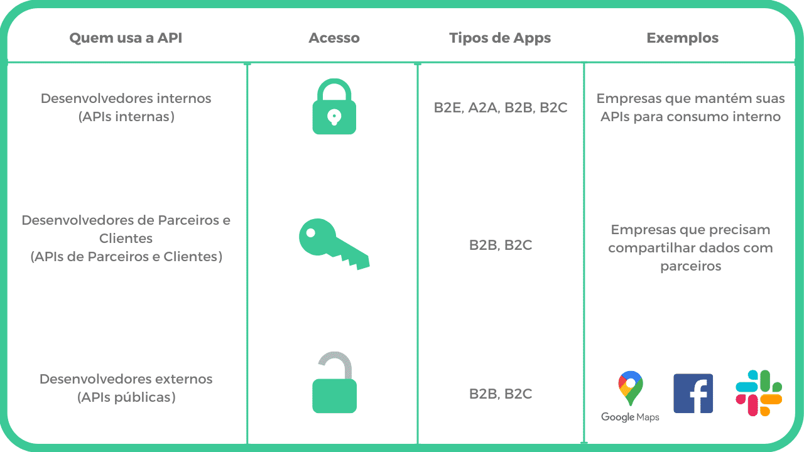
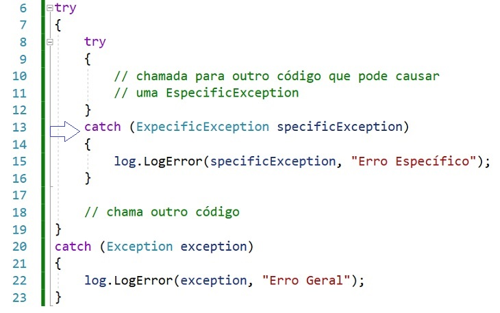

Uma API ou Interface de Programação de Aplicações são conjuntos de regras que permite diferestes interações entre proramas para se comunicarem e trocarem dados, a partir disso executarem funções em conjunto


Usamos APIs em nosso dia a dia sem que percebamos. Alguns exemplos de uso e de integração de APIs são: interação com chatbots (no WhatsApp, por exemplo), compras pelo e-commerce, em que utilizamos APIs de pagamentos e de localização (como o Google Maps) e em serviços de frete, estoque e envio de notas fiscais.
Independentemente do tipo de API,para que o projeto de Front-End deum site pode ser integrado ao Back-Terminar a API funcionando corretamente, é necessário estruturá-la em um formato padronizado. Aqui, trabalharemos com os principios da API REST. REST é um acrônimo para Transferência de Estado Representacional ou, em português, Transferência de Estado Representacional. Trata-se de um conjunto de regras e boas práticas para o desenvolvimento de APIs que propõe uma hierarquia organizada do código. Como a rede de comunicações mais usada é a internet, a maioria das APIs são projetados com base em padrões da web; portanto, é necessário que o cliente (site) manipular os recursos via requisições HTTP para que o servidor processe a requisição e fornecimento de uma saída (resposta), que será fornecida e apresentada no Navegador.
é um manual técnico que explica como os sistemas se comunicam por meio de uma Interface de Programação de Aplicações (API). [1] (https://www.blip.ai/blog/tecnologia/documentar-api/)
Quando um cliente (site) dispara uma requisição HTTP para um servidor, além do URI que identifica quais recursos que ele pretende manipular, é necessário que ele informe também o tipo de ação que deseja realizar no recurso, como criar o cadastro de um novo cliente, visualizar suas informações, atualizá-las ou excluí-las, entre outras opções. As aplicações mais utilizadas por uma API REST, geralmente, são os métodos PEGAR, PUBLICAR, COLOCAR e EXCLUIR do protocolo HTTP.
Depois de uma requisição, a API envia uma resposta informando se a operação funcionou ou não. Os códigos mais comuns são:
Exceção é um erro que pode acontecer durante a execução do programa. Por exemplo, a API pode estar fora do ar ou a internet pode cair. Em JavaScript, podemos utilizar try...catch:
